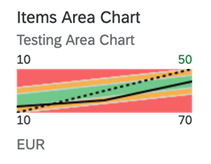

It provides information for actual and target values for a specific time range.

In the above chart, the bottom values (10 and 70) represent the dimension values.
They are the IDs of the SalesOrder Items. The upper values (10 and
50) are the measure values. They are the values of the solid black line at the start
and end.
A single measure value is shown along with the threshold values (error, warning,
acceptance and good range values). So, semantic coloring via the
CriticalityCalculation annotation is mandatory when an area
micro chart is used. For more information, see Samples documentation.
The UI.Chart Title property is used for the title.
The UI.Chart Description property is used for the subtitle.
<Annotation Term="UI.Chart">
<Record Type="UI.ChartDefinitionType">
<PropertyValue Property="Title" String="Sales Price" />
<PropertyValue Property="Description" String="Area Micro Chart" />
<PropertyValue Property="ChartType" EnumMember="UI.ChartType/Area" />
<PropertyValue Property="Dimensions">
<Collection>
<PropertyPath>PriceDay</PropertyPath>
</Collection>
</PropertyValue>
<PropertyValue Property="Measures">
<Collection>
<PropertyPath>AreaChartPrice</PropertyPath>
</Collection>
</PropertyValue>
<PropertyValue Property="MeasureAttributes">
<Collection>
<Record Type="UI.ChartMeasureAttributeType">
<PropertyValue Property="Measure" PropertyPath="AreaChartPrice" />
<PropertyValue Property="Role" EnumMember="UI.ChartMeasureRoleType/Axis1" />
<PropertyValue Property="DataPoint" AnnotationPath="@UI.DataPoint#AreaChartPrice" />
</Record>
</Collection>
</PropertyValue>
</Record>
</Annotation>
<Annotation Term="UI.DataPoint" Qualifier="AreaChartPrice">
<Record>
<PropertyValue Property="Title" String="Sales Price" />
<PropertyValue Property="Value" Path="AreaChartPrice" />
<PropertyValue Property="TargetValue" Path="TargetPrice" />
<PropertyValue Property="CriticalityCalculation">
<Record>
<PropertyValue Property="ImprovementDirection" EnumMember="UI.ImprovementDirectionType/Target" />
<PropertyValue Property="DeviationRangeHighValue" Path="DeviationUpperBoundPrice" />
<PropertyValue Property="DeviationRangeLowValue" Path="DeviationLowerBoundPrice" />
<PropertyValue Property="ToleranceRangeHighValue" Path="ToleranceUpperBoundPrice" />
<PropertyValue Property="ToleranceRangeLowValue" Path="ToleranceLowerBoundPrice" />
</Record>
</PropertyValue>
</Record>
</Annotation>
The unit of measure is plotted using the first entry in the data that is to be plotted.
The first and last values of the measure are set as labels at the top left and top right corners of the micro chart, and the first and the last dimension values from the data at the bottom left and bottom right corners correspondingly.
Mandatory:
UI.Chart → ChartType:
“Area”UI.Chart → DimensionsUI.Chart → MeasuresUI.Chart → MeasureAttributes →
DataPointUI.DataPoint → ValueUI.CriticalityCalculationUI.DataPoint →
CriticalityCalculation
UI.DataPoint →
CriticalityCalculation/ImprovementDirection